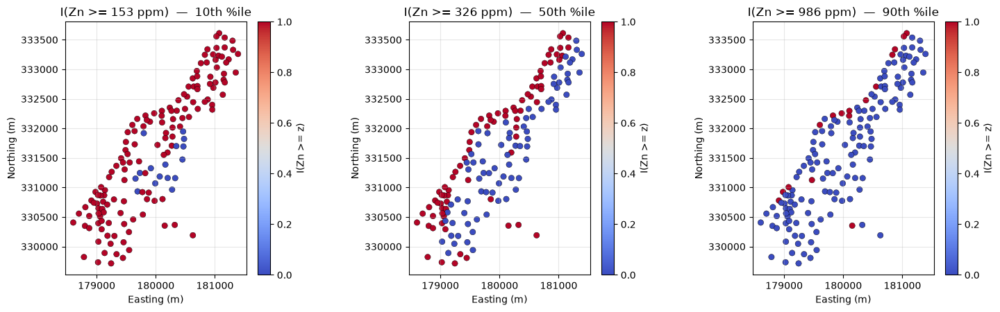
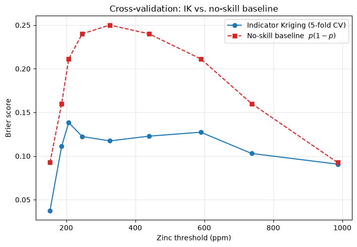
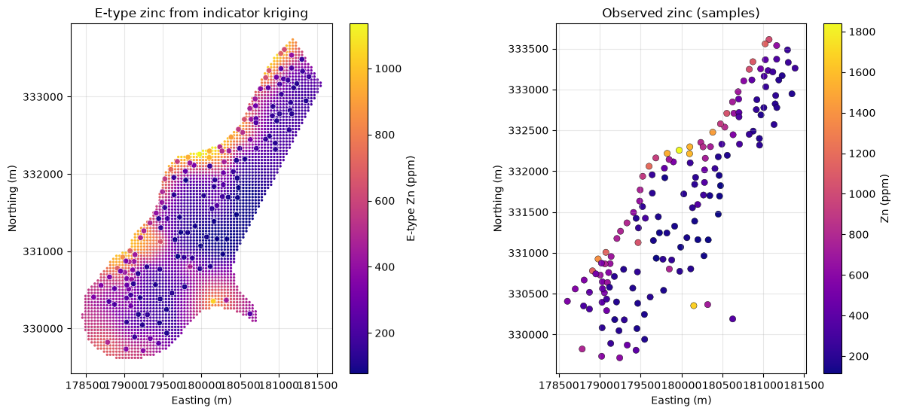
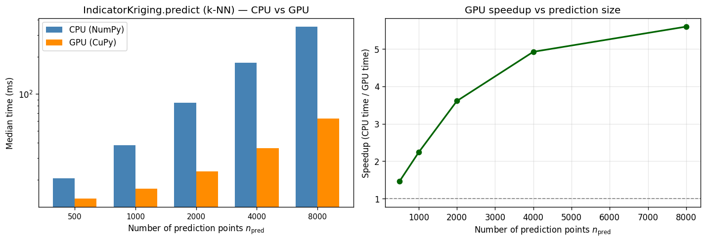

Indicator Kriging (IK) is a non-parametric interpolator: instead of kriging the continuous variable \(Z(\mathbf{x})\) itself, it kriges a family of binary indicators\(I(\mathbf{x}; z_k)\) that record whether \(Z\) exceeds a cutoff \(z_k\). The kriged indicator is an estimate of the exceedance probability\(P[Z(\mathbf{x}_0) \ge z_k]\). Stacking several cutoffs builds a local conditional distribution, from which an E-type (expected-value) map of zinc can be recovered without assuming Gaussianity.
That matters for Meuse zinc. The 155 floodplain samples are right-skewed (min 113 ppm, median 326 ppm, max 1 839 ppm). Ordinary kriging of the raw grades would smear the high-grade river-bank samples across the floodplain and would need a Gaussian assumption to turn \((\hat{Z}, \sigma_K)\) into exceedance probabilities. Indicator kriging does neither: each cutoff has its own variogram, so the spatial continuity of “high zinc” can differ from that of “moderate zinc”.
GSLIB’s ik3d (Deutsch & Journel, GSLIB: Geostatistical Software Library, 2nd ed.) is the reference implementation. pygstat.IndicatorKriging is the library’s ordinary-indicator engine for 2-D point data — the same linear system as ik3d’s ordinary-kriging branch, with per-threshold spherical or exponential covariance, a local search neighborhood, and probabilities clipped to \([0, 1]\).
Step
What we do
Data
Load meuse.csv (155 samples) and meuse_grid.csv (~3 100 floodplain nodes)
Cutoffs
Nine zinc quantiles (10%–90%); skip 0% / 100% (degenerate indicators)
Indicator variograms
Empirical \(\gamma_I(h; z_k)\) and a spherical fit at each cutoff
Cross-validation
5-fold Brier score vs a no-skill (marginal frequency) baseline
Mapping
\(P(\mathrm{Zn} \ge z_k)\) on the Meuse grid at the 10th, 50th, and 90th percentiles
E-type
Expected zinc from the local ccdf via compute_etype_from_probabilities
CPU / GPU | Time k-NN IndicatorKriging on CPU vs GPU using sgsim Meuse-like zinc (\(n=8{,}000\)) |
By the end you will have probability maps of zinc exceedance, a Brier-score check that IK beats a naive baseline, an E-type map that can be compared with ordinary kriging of the raw grades, and a CPU vs GPU timing of the batched k-NN IK solve on a simulated Meuse field with \(n > 5{,}000\).
2. Theory - Indicator Transform and Exceedance Probability
Let \(Z(\mathbf{x})\) be the continuous grade (zinc, ppm) at location \(\mathbf{x} = (x, y)\). For a cutoff \(z_k\), the indicator used by pygstat.IndicatorKriging is the exceedance coding
(GSLIB ik3d more often stores the complementary cdf coding \(I(\mathbf{x}; z_k) = 1\) if \(Z \le z_k\); the two are equivalent up to a flip, \(P[Z \ge z_k] = 1 - F(z_k^-)\).) Taking expectation,
Ordinary kriging of the \(0/1\) data is therefore a direct estimator of the exceedance probability. The estimate \(I^*(\mathbf{x}_0; z_k)\) is clipped to \([0, 1]\) after solving the kriging system, because a raw linear combination of indicators is not guaranteed to stay inside the probability interval.
A small worked example with cutoff \(z_k = 10\):
Location
\(Z(\mathbf{x}_i)\)
\(I(\mathbf{x}_i; 10)\)
A
5
0
B
20
1
C
15
1
Kriging those three 0/1 values at an unsampled point yields \(P[Z \ge 10]\) there — not an estimate of the grade itself.
3. Theory - Indicator Variograms
Each cutoff has its own spatial continuity. High-grade zinc along the Meuse river may be more nuggety (or more anisotropic) than the mid-grade background, so a single variogram of \(Z\) is the wrong covariance for every probability map. The experimental indicator semivariogram at cutoff \(z_k\) is the usual Matheron estimator applied to \(I(\cdot; z_k)\):
\(\gamma_I\) is identical for \(I\) and \(1-I\) (squared differences do not change), so the empirical curve from fit_indicator_variogram (which uses \(I(Z \le z_k)\)) can be used as the covariance model for IndicatorKriging (which uses \(I(Z \ge z_k)\)).
The theoretical sill of a binary indicator is \(p_k(1-p_k)\), where \(p_k = P[Z \ge z_k]\). Extreme cutoffs (\(p_k \to 0\) or \(1\)) have almost no variance and noisy empirical variograms — which is why we drop the 0% and 100% quantiles.
This notebook fits a spherical model at each cutoff,
\[
\gamma(h) =
\begin{cases}
c_0 + c\bigl(1.5\,h/a - 0.5\,(h/a)^3\bigr), & h < a \\
c_0 + c, & h \ge a,
\end{cases}
\]
and passes the triple \((c_0, c, a)\) to IndicatorKriging.predict as variogram_params[z_k]. The corresponding covariance used in the kriging system is \(C(h) = C(0) - \gamma(h)\), implemented as _spherical_covariance in pygstat.indicator_kriging.
4. Theory - The Indicator Kriging System
At a target \(\mathbf{x}_0\), ordinary indicator kriging uses the \(n\) neighbouring indicators inside a search radius (capped at max_neighbors) and solves the same OK system as Tutorial 04, but with the indicator covariance\(C_I\):
The extra row \(\sum_i \lambda_i = 1\) (Lagrange multiplier \(\mu\)) makes the estimator unbiased for an unknown local mean — here the unknown local exceedance rate. pygstat.IndicatorKriging solves this with scipy.linalg.solve (symmetric) and falls back to least squares if the neighbourhood is degenerate. After clipping,
Search neighbourhood. Distant 0/1 samples should not inform a local probability (and they make \(C_I\) large and ill-conditioned). The implementation builds a cKDTree on the (optionally anisotropically transformed) coordinates and keeps at most max_neighbors points inside search_radius. Geometric anisotropy is the usual 2-D rotation-and-range-ratio transform (anisotropy_angle, anisotropy_ratio).
Simple numerical example of why order relations matter. Nothing in the linear system forces \(I^*(\mathbf{x}_0; z_{k}) \ge I^*(\mathbf{x}_0; z_{k+1})\) when \(z_k < z_{k+1}\). GSLIB ik3d applies an order-relation correction after kriging. IndicatorKriging currently clips each probability to \([0, 1]\) independently; for well-separated quantiles on Meuse this is usually enough, but a decreasing rearrangement of the ccdf is the fully rigorous next step (see Goovaerts 1997, Ch. 7).
5. Theory - Conditional CDF and E-type Estimates
A set of cutoffs \(z_1 < z_2 < \cdots < z_K\) turns the probability maps into a discrete conditional cdf at every location:
The E-type estimate (GSLIB’s name for the conditional expectation, “expected type”) is the mean of that local distribution. For a non-negative variable,
With discrete cutoffs this is a trapezoid rule, including a lower tail from \(z_{\min}\) (here 0 ppm) to \(z_1\) where \(P \approx 1\), and an upper tail from \(z_K\) to \(z_{\max}\):
where \(p_k = I^*(\mathbf{x}_0; z_k)\). That is exactly pygstat.compute_etype_from_probabilities. The E-type map is a smoothed grade map: it respects the local distribution (so it is not Gaussian OK) but it averages away the extremes that sequential indicator simulation (sisim) would keep.
Estimate
What it is
Typical use
\(I^*(\mathbf{x}_0; z_k)\)
\(P[Z \ge z_k]\)
Risk / classification maps
E-type \(Z_E(\mathbf{x}_0)\)
\(\mathbb{E}[Z \mid \text{data}]\)
Mean grade map without a Gaussian assumption
Sequential indicator simulation
Sampled ccdfs
Uncertainty, \(P(Z > z)\) that preserves spatial variability
6. Python Setup
6.1 CPU and GPU
IndicatorKriging solves a local ordinary-kriging system at every prediction point. In the default k-nearest-neighbor mode (search_radius=None) every point has the same neighbor count \(k\), so pygstat stacks the systems into one (n_{\mathrm{pred}}, k+1, k+1) batched xp.linalg.solve — NumPy on CPU, CuPy on GPU.
Argument
What it controls
use_gpu
Batched k-NN indicator-kriging solve (NumPy or CuPy).
search_radius
If set, neighbor counts vary by point and the batch path is skipped (CPU only).
use_gpu is:
Value
Behaviour
'auto' (default)
GPU when CuPy can run a kernel on this card. Falls back to CPU otherwise.
True
Force GPU. Warns and falls back to CPU if CuPy is missing or cannot run a kernel.
False
Always CPU (NumPy/SciPy).
This notebook probes the GPU once with cupy_gpu_usable() and stores the result in USE_GPU. IndicatorKriging(...) calls below pass use_gpu=USE_GPU. The Meuse floodplain maps in §11 use a search_radius neighborhood (GSLIB-style), which stays on CPU; §13 times the k-NN GPU path on an SGS-simulated Meuse zinc field with \(n > 5{,}000\).
Install CuPy with pip install pygstat[gpu] (CUDA 11) or pip install cupy-cuda12x for CUDA 12.
Code
%matplotlib inlineimport sys, os, warningswarnings.filterwarnings("ignore")# Keep TensorFlow out of this process (optional RK backends).sys.modules.setdefault("tensorflow", None)sys.path.insert(0, os.path.abspath("../src"))import numpy as npimport pandas as pdimport matplotlib.pyplot as pltfrom scipy.optimize import minimizefrom sklearn.metrics import brier_score_lossimport pygstatfrom pygstat import ( IndicatorKriging, IndicatorKrigingCV, fit_indicator_variogram, compute_etype_from_probabilities, sgsim,)from pygstat.utils.backend import CUPY_AVAILABLE, cupy_gpu_usableplt.rcParams["figure.dpi"] =100plt.rcParams["axes.grid"] =Trueplt.rcParams["grid.alpha"] =0.3np.random.seed(42)print("pygstat version:", pygstat.__version__)# ── IK k-NN batched OK: CPU / GPU dispatch (CuPy) ──────────────────────────────# cupy_gpu_usable() runs a real kernel (not just `import cupy`). Older cards can# import CuPy and still fail at compile time; those stay on CPU.USE_GPU = cupy_gpu_usable()if USE_GPU:import cupy as cpprint(f"CuPy : {cp.__version__}")try: name = cp.cuda.runtime.getDeviceProperties(0)["name"]ifisinstance(name, bytes): name = name.decode()print(f"GPU (CuPy) : {name}")exceptException:print("GPU (CuPy) : available")print("Backend : GPU (CuPy) — IK k-NN batched OK solve on GPU")else:if CUPY_AVAILABLE:import cupy as cpprint(f"CuPy : {cp.__version__} (installed, but cannot run a kernel on this GPU/CUDA setup)")else:print("CuPy : not installed (pip install pygstat[gpu] or cupy-cuda12x)")print("Backend : CPU (NumPy)")print(f"use_gpu : {USE_GPU}")
pygstat version: 0.1.0
CuPy : 14.2.0
GPU (CuPy) : NVIDIA GeForce RTX 2080 Ti
Backend : GPU (CuPy) — IK k-NN batched OK solve on GPU
use_gpu : True
7. Load and Explore the Meuse Zinc Data
The Meuse data are 155 topsoil samples from the floodplain of the Meuse river near Stein (NL), originally published with the sp / gstat R packages. Zinc is the classic demonstration variable: strongly right-skewed, with the highest grades along the river. The prediction grid is an irregular 40 m lattice covering the floodplain (~3 100 nodes).
Nine quantiles (10%, 20%, …, 90%) give a ccdf that is dense enough for an E-type integral without wasting a cutoff on the degenerate 0% / 100% indicators. At each \(z_k\) the global exceedance rate \(p_k\) sets the indicator sill \(p_k(1-p_k)\).
Code
quantiles = np.arange(0.10, 1.00, 0.10)thresholds = np.quantile(zinc, quantiles)p_exceed = np.array([(zinc >= t).mean() for t in thresholds])cutoff_tbl = pd.DataFrame({"quantile": quantiles,"threshold_ppm": thresholds.round(1),"p(Zn >= z_k)": p_exceed.round(3),"indicator_sill p(1-p)": (p_exceed * (1- p_exceed)).round(4),"n_exceed": [(zinc >= t).sum() for t in thresholds],})display(cutoff_tbl)fig, axes = plt.subplots(1, 3, figsize=(15, 4.6))show_idx = [0, 4, 8]for ax, i inzip(axes, show_idx): t = thresholds[i] ind = (zinc >= t).astype(float) sc = ax.scatter( df["x"], df["y"], c=ind, cmap="coolwarm", s=36, edgecolors="k", linewidths=0.3, vmin=0, vmax=1, ) plt.colorbar(sc, ax=ax, label="I(Zn >= z)", fraction=0.046, pad=0.04) ax.set_title(f"I(Zn >= {t:.0f} ppm) — {int(quantiles[i]*100)}th %ile") ax.set_xlabel("Easting (m)") ax.set_ylabel("Northing (m)") ax.set_aspect("equal")plt.tight_layout()plt.show()
quantile
threshold_ppm
p(Zn >= z_k)
indicator_sill p(1-p)
n_exceed
0
0.1
152.8
0.897
0.0926
139
1
0.2
186.8
0.800
0.1600
124
2
0.3
207.2
0.697
0.2113
108
3
0.4
246.4
0.600
0.2400
93
4
0.5
326.0
0.503
0.2500
78
5
0.6
439.6
0.400
0.2400
62
6
0.7
589.8
0.303
0.2113
47
7
0.8
737.2
0.200
0.1600
31
8
0.9
986.4
0.103
0.0926
16

9. Empirical Indicator Variograms
fit_indicator_variogram returns the Matheron estimator at each cutoff. A spherical model is then least-squares fitted with the nugget / sill boxed to the binary range \([0, 0.3]\) and the range boxed to a multiple of the median pairwise distance. The fitted \((c_0, c, a)\) triples become variogram_params for kriging.
so 0 is perfect and the no-skill baseline (always predict the global rate \(p_k\)) equals \(p_k(1-p_k)\) — the indicator variance. IndicatorKrigingCV refits IK on each of 5 shuffled folds and scores the held-out probabilities. A useful model lies below the dashed baseline at every cutoff.
Code
ik_cv_model = IndicatorKriging( cov_model="spherical", max_neighbors=12, search_radius=maxlag *0.8, use_gpu=USE_GPU,)cv = IndicatorKrigingCV(n_splits=5, random_state=42)cv_result = cv.validate(ik_cv_model, coords, zinc, thresholds, variogram_params)brier_avg = cv_result["brier_scores"]baseline_brier = {t: p * (1- p) for t, p inzip(thresholds, p_exceed)}brier_tbl = pd.DataFrame({"threshold_ppm": [round(t, 1) for t in thresholds],"IK Brier": [brier_avg[t] for t in thresholds],"no-skill Brier": [baseline_brier[t] for t in thresholds],})brier_tbl["skill"] =1.0- brier_tbl["IK Brier"] / brier_tbl["no-skill Brier"]display(brier_tbl.round(4))print("Mean IK Brier :", f"{brier_tbl['IK Brier'].mean():.4f}")print("Mean baseline :", f"{brier_tbl['no-skill Brier'].mean():.4f}")
threshold_ppm
IK Brier
no-skill Brier
skill
0
152.8
0.0374
0.0926
0.5965
1
186.8
0.1113
0.1600
0.3041
2
207.2
0.1384
0.2113
0.3451
3
246.4
0.1223
0.2400
0.4902
4
326.0
0.1174
0.2500
0.5306
5
439.6
0.1228
0.2400
0.4885
6
589.8
0.1273
0.2113
0.3975
7
737.2
0.1030
0.1600
0.3565
8
986.4
0.0907
0.0926
0.0199
Mean IK Brier : 0.1078
Mean baseline : 0.1842
Code
fig, ax = plt.subplots(figsize=(7.2, 5))ax.plot(thresholds, [brier_avg[t] for t in thresholds],"o-", color="tab:blue", label="Indicator Kriging (5-fold CV)")ax.plot(thresholds, [baseline_brier[t] for t in thresholds],"s--", color="tab:red", label="No-skill baseline $p(1-p)$")ax.set_xlabel("Zinc threshold (ppm)")ax.set_ylabel("Brier score")ax.set_title("Cross-validation: IK vs. no-skill baseline")ax.legend()plt.tight_layout()plt.show()

11. Predict Exceedance Probabilities on the Grid
Fit IndicatorKriging on all 155 samples and predict \(P[\mathrm{Zn} \ge z_k]\) at every floodplain grid node. The three maps below are the 10th, 50th, and 90th percentile cutoffs — low, typical, and high-grade zinc.
Code
ik = IndicatorKriging( cov_model="spherical", max_neighbors=12, search_radius=maxlag *0.8, use_gpu=USE_GPU,)ik.fit(coords, zinc)probabilities = ik.predict(coords_grid, thresholds.tolist(), variogram_params)for t in thresholds: p = probabilities[t]print(f"z = {t:7.1f} ppm "f"P in [{np.nanmin(p):.3f}, {np.nanmax(p):.3f}] "f"mean = {np.nanmean(p):.3f} "f"nans = {np.isnan(p).sum()}" )
z = 152.8 ppm P in [0.000, 1.000] mean = 0.835 nans = 0
z = 186.8 ppm P in [0.000, 1.000] mean = 0.691 nans = 0
z = 207.2 ppm P in [0.004, 1.000] mean = 0.587 nans = 0
z = 246.4 ppm P in [0.000, 1.000] mean = 0.469 nans = 0
z = 326.0 ppm P in [0.000, 1.000] mean = 0.389 nans = 0
z = 439.6 ppm P in [0.000, 1.000] mean = 0.301 nans = 0
z = 589.8 ppm P in [0.000, 0.953] mean = 0.226 nans = 0
z = 737.2 ppm P in [0.000, 0.991] mean = 0.150 nans = 0
z = 986.4 ppm P in [0.000, 0.558] mean = 0.068 nans = 0
Integrating the nine probability maps with compute_etype_from_probabilities (trapezoid rule, lower tail from 0 ppm, upper tail to the sample maximum) gives the E-type zinc map — the local conditional mean, without a Gaussian assumption.
E-type Zn (ppm): min 76.6 mean 396.7 max 1135.4
Sample zinc mean: 469.7 ppm

13. CPU vs GPU IK Timing
The 155-sample Meuse survey is too small for a GPU comparison: the batched IK solve is a stack of tiny \((k+1)\times(k+1)\) systems, and host→device copies dominate. Here we simulate a Meuse-like zinc field with Sequential Gaussian Simulation (pygstat.sgsim) so that \(n_{\mathrm{train}} > 5{,}000\), then time k-nearest-neighbor indicator kriging (search_radius=None) on CPU (use_gpu=False) versus GPU (use_gpu=True).
Simulation recipe (conditioned on the real 155 samples):
Draw \(n_{\mathrm{train}} = 8{,}000\) random locations in the Meuse bounding box.
Simulate \(\log(\mathrm{zinc})\) with sgsim (exponential variogram, practical range 900 m, as in tutorial 18) and back-transform with \(\exp(\cdot)\).
Draw a separate prediction set (no values needed — IK only needs coordinates).
Unlike global ordinary kriging, IK’s GPU work scales with \(n_{\mathrm{pred}}\) (one stacked solve of shape (n_pred, k+1, k+1) per cutoff), not \(n_{\mathrm{train}}^3\). Training size is therefore held at 8{,}000 and we vary \(n_{\mathrm{pred}}\). Variogram parameters are held fixed (binary spherical: nugget 0.02, partial sill 0.20, range 900 m) so fitting \(\gamma_I\) is not in the times. Three quartile cutoffs of the simulated zinc are kriged.
Each timing is the median of three fit + predict calls after a short GPU warmup so CUDA kernel compilation is not counted. If CuPy cannot run a kernel here, the GPU column is skipped.
Code
import timefrom pygstat import sgsimN_REPEATS =3N_TRAIN =8000PRED_SIZES = [500, 1000, 2000, 4000, 8000]N_PRED_MAX =max(PRED_SIZES)rng_sim = np.random.default_rng(42)pad =50.0xmin, xmax =float(coords[:, 0].min()) - pad, float(coords[:, 0].max()) + padymin, ymax =float(coords[:, 1].min()) - pad, float(coords[:, 1].max()) + padxy_train_all = rng_sim.uniform([xmin, ymin], [xmax, ymax], size=(N_TRAIN, 2))xy_pred_all = rng_sim.uniform([xmin, ymin], [xmax, ymax], size=(N_PRED_MAX, 2))df_cond = pd.DataFrame({"x": coords[:, 0],"y": coords[:, 1],"log_zinc": np.log(zinc),})vario_sgs = [0, 0.05, 900.0, 900.0, float(np.var(np.log(zinc))), "exponential"]print(f"Simulating {N_TRAIN:,} Meuse-like zinc locations with sgsim")print(f" conditioning : {len(zinc)} samples from data/meuse.csv")print(f" vario : azimuth=0, nugget=0.05, range=900 m, exponential, log(zinc) space")t_sim0 = time.perf_counter()sims = sgsim( xy_train_all, df_cond, "x", "y", "log_zinc", num_points=12, vario=vario_sgs, radius=2000, kriging_type="ordinary", nsim=1, itrans=False, seed=42, quiet=True,)z_train_all = np.exp(np.asarray(sims[0], dtype=float))print(f" sgsim wall : {time.perf_counter() - t_sim0:.1f} s (not included in IK times)")print(f" simulated Zn : [{z_train_all.min():.0f}, {z_train_all.max():.0f}] ppm"f" (Meuse observed [{zinc.min():.0f}, {zinc.max():.0f}])")thresholds_sim = [float(t) for t in np.quantile(z_train_all, [0.25, 0.50, 0.75])]variogram_params_sim = {t: (0.02, 0.20, 900.0) for t in thresholds_sim}print(f" cutoffs : {[round(t, 1) for t in thresholds_sim]} ppm (quartiles)")print()def _time_ik(xy_train, z_train, xy_pred, use_gpu, repeats=N_REPEATS, warmup=True):"""Median wall time of IndicatorKriging.fit + predict (k-NN, search_radius=None)."""if warmup: k_tr =min(40, len(xy_train)) k_pr =min(40, len(xy_pred)) IndicatorKriging( cov_model="spherical", max_neighbors=12, search_radius=None, use_gpu=use_gpu, ).fit(xy_train[:k_tr], z_train[:k_tr]).predict( xy_pred[:k_pr], thresholds_sim, variogram_params_sim )if use_gpu:import cupy as cp cp.cuda.Device(0).synchronize() times = [] last =Nonefor _ inrange(repeats): t0 = time.perf_counter() ik_m = IndicatorKriging( cov_model="spherical", max_neighbors=12, search_radius=None, use_gpu=use_gpu, ) ik_m.fit(xy_train, z_train) last = ik_m.predict(xy_pred, thresholds_sim, variogram_params_sim)if use_gpu:import cupy as cp cp.cuda.Device(0).synchronize() times.append(time.perf_counter() - t0)returnfloat(np.median(times)), lastdef _probs_match(a, b):returnall( np.allclose(a[t], b[t], rtol=1e-4, atol=1e-4, equal_nan=True)for t in thresholds_sim )print(f"GPU usable : {USE_GPU}")print(f"Repeats : {N_REPEATS} (median wall time of IK fit + predict, k-NN)")print(f"n_train : {N_TRAIN} (sgsim Meuse-like zinc)")print(f"n_pred : {PRED_SIZES} (random locations in the Meuse bbox)")print(f"thresholds : {len(thresholds_sim)} quartile cutoffs; max_neighbors=12")print()rows = []for n_pred in PRED_SIZES: xy_pr = xy_pred_all[:n_pred] cpu_t, pred_cpu = _time_ik(xy_train_all, z_train_all, xy_pr, use_gpu=False) row = {"dataset": "Meuse (sgsim)","n_train": N_TRAIN,"n_pred": n_pred,"CPU (s)": cpu_t,"GPU (s)": np.nan,"speedup": np.nan,"match": "—", }if USE_GPU: gpu_t, pred_gpu = _time_ik(xy_train_all, z_train_all, xy_pr, use_gpu=True) row["GPU (s)"] = gpu_t row["speedup"] = cpu_t / gpu_t row["match"] =bool(_probs_match(pred_cpu, pred_gpu))import cupy as cp cp.get_default_memory_pool().free_all_blocks() rows.append(row)df_bench = pd.DataFrame(rows)df_show = df_bench.copy()df_show["CPU (ms)"] = (df_show["CPU (s)"] *1000).round(1)df_show["GPU (ms)"] = (df_show["GPU (s)"] *1000).round(1)df_show["speedup"] = df_show["speedup"].map(lambda x: "—"if pd.isna(x) elsef"{x:.2f}×")print(df_show[["dataset", "n_train", "n_pred", "CPU (ms)", "GPU (ms)", "speedup", "match"]].to_string(index=False))fig, axes = plt.subplots(1, 2, figsize=(12, 4.2))n_vals = df_bench["n_pred"].to_numpy()cpu_ms = df_bench["CPU (s)"].to_numpy() *1000gpu_ms = df_bench["GPU (s)"].to_numpy() *1000labels = [str(int(n)) for n in n_vals]x = np.arange(len(n_vals))w =0.36axes[0].bar(x - w /2, cpu_ms, w, label="CPU (NumPy)", color="steelblue")if USE_GPU and np.isfinite(gpu_ms).all(): axes[0].bar(x + w /2, gpu_ms, w, label="GPU (CuPy)", color="darkorange")axes[0].set_xticks(x)axes[0].set_xticklabels(labels, fontsize=9)axes[0].set_xlabel("Number of prediction points $n_{\\mathrm{pred}}$")axes[0].set_ylabel("Median time (ms)")axes[0].set_title("IndicatorKriging.predict (k-NN) — CPU vs GPU")axes[0].legend()axes[0].set_yscale("log")if USE_GPU: axes[1].plot(n_vals, df_bench["speedup"], "o-", color="darkgreen", lw=2) axes[1].axhline(1.0, color="grey", ls="--", lw=1) axes[1].set_xlabel("Number of prediction points $n_{\\mathrm{pred}}$") axes[1].set_ylabel("Speedup (CPU time / GPU time)") axes[1].set_title("GPU speedup vs prediction size") axes[1].grid(True, alpha=0.3)else: axes[1].text(0.5, 0.5,"GPU not usable in this environment\\nCPU-only timings shown", ha="center", va="center", transform=axes[1].transAxes, ) axes[1].set_axis_off()plt.tight_layout()plt.show()
Simulating 8,000 Meuse-like zinc locations with sgsim
conditioning : 155 samples from data/meuse.csv
vario : azimuth=0, nugget=0.05, range=900 m, exponential, log(zinc) space
sgsim wall : 58.4 s (not included in IK times)
simulated Zn : [25, 8046] ppm (Meuse observed [113, 1839])
cutoffs : [224.0, 424.1, 888.2] ppm (quartiles)
GPU usable : True
Repeats : 3 (median wall time of IK fit + predict, k-NN)
n_train : 8000 (sgsim Meuse-like zinc)
n_pred : [500, 1000, 2000, 4000, 8000] (random locations in the Meuse bbox)
thresholds : 3 quartile cutoffs; max_neighbors=12
dataset n_train n_pred CPU (ms) GPU (ms) speedup match
Meuse (sgsim) 8000 500 20.7 14.1 1.46× True
Meuse (sgsim) 8000 1000 38.1 17.0 2.24× True
Meuse (sgsim) 8000 2000 84.7 23.5 3.61× True
Meuse (sgsim) 8000 4000 179.1 36.4 4.92× True
Meuse (sgsim) 8000 8000 351.7 62.8 5.60× True

Exceedance probabilities from the two backends should match (match = True). The GPU speedup comes from the batched \((n_{\mathrm{pred}}, k+1, k+1)\) OK solve at each cutoff, not from SGS (simulation is CPU sequential and is excluded from the times). Small \(n_{\mathrm{pred}}\) can show little GPU gain because kernel-launch overhead dominates; as the prediction set grows the stacked solve keeps the GPU several times faster. Use use_gpu=USE_GPU with search_radius=None so the same cells run on a laptop CPU or a CUDA workstation without edits.
14. Summary and Conclusions
Indicator kriging estimates \(P[Z \ge z_k]\) by ordinary kriging of the 0/1 exceedance indicators. It is the right interpolator when the grade is skewed, when a regulatory cutoff matters more than the mean, or when a Gaussian OK probability map would be misleading.
pygstat.IndicatorKriging implements that OK system in 2-D with a local search neighbourhood and per-threshold spherical / exponential covariance — the ordinary-kriging branch of GSLIB ik3d.
On Meuse zinc, nine quantile cutoffs (10%–90%) produced well-behaved indicator variograms. Extreme cutoffs were avoided because the indicator variance \(p(1-p)\) collapses and the empirical \(\gamma_I\) becomes noisy.
5-fold Brier scores sat below the no-skill baseline \(p(1-p)\) at every cutoff, so the spatial model is adding skill, not just reproducing the histogram.
The probability maps concentrate high \(P(\mathrm{Zn} \ge z_{90})\) along the river, matching the sample pattern, while the 10th-percentile map is high almost everywhere (most of the floodplain exceeds the low cutoff).
The E-type map (compute_etype_from_probabilities) is a distribution-free mean-grade surface. It is smoother than any single sequential-indicator realization (sisim) and is the IK analogue of an ordinary-kriging grade map.
CPU / GPU. k-NN indicator kriging (search_radius=None, use_gpu=USE_GPU) was timed on an sgsim Meuse-like zinc field with 8{,}000 training locations. The GPU batched (n_pred, k+1, k+1) solve is the accelerated step; SGS itself is sequential and was not timed.
Object
Role in this notebook
fit_indicator_variogram
Empirical \(\gamma_I(h; z_k)\)
IndicatorKriging
Ordinary IK probabilities \(P[Z \ge z_k]\)
IndicatorKrigingCV
5-fold Brier-score validation
compute_etype_from_probabilities
\(Z_E = \int P[Z \ge z]\,dz\)
15. Resources
Textbooks
Reference
Notes
Deutsch, C.V. & Journel, A.G. (1998). GSLIB: Geostatistical Software Library and User’s Guide (2nd ed.). Oxford University Press.
Reference for ik3d, order-relation corrections, and E-type estimates
Goovaerts, P. (1997). Geostatistics for Natural Resources Evaluation. Oxford University Press.
Indicator coding, per-threshold variograms, E-type vs. simulation